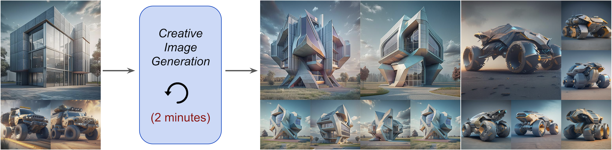
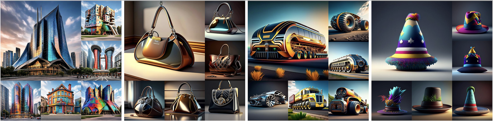
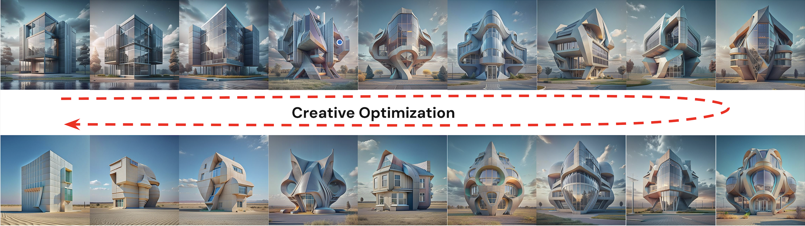
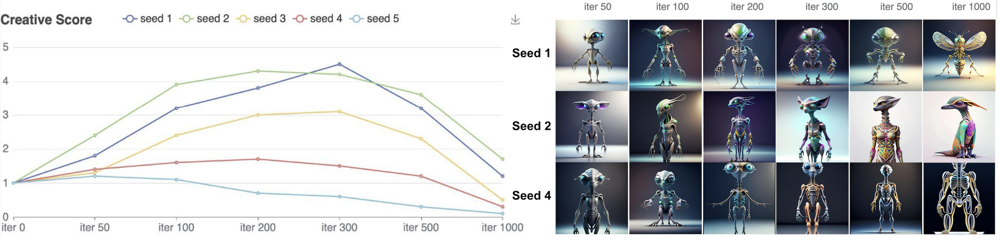

Creative Image Generation with Diffusion Models

Creative image generation has emerged as a compelling area of research, driven by the need to produce novel and high-quality images that expand the boundaries of imagination. In this work, we propose a novel framework for creative generation using diffusion models, where creativity is associated with the inverse probability of an image's existence in the CLIP embedding space. Unlike prior approaches that rely on a manual blending of concepts or exclusion of subcategories, our method calculates the probability distribution of generated images and drives it towards low-probability regions to produce rare, imaginative, and visually captivating outputs. We also introduce pullback mechanisms, achieving high creativity without sacrificing visual fidelity. Extensive experiments on text-to-image diffusion models demonstrate the effectiveness and efficiency of our creative generation framework, showcasing its ability to produce unique, novel, and thought-provoking images. This work provides a new perspective on creativity in generative models, offering a principled method to foster innovation in visual content synthesis.
Can powerful AIs generate truly novel and creative outcomes? We argue that these systems fundamentally lack creativity for good reasons. They are designed to mimic training distributions, with their loss functions displaying a pronounced bias toward typical outputs. These systems fundamentally lack creativity because they are explicitly designed to imitate training distributions, with loss functions and evaluation metrics that strongly favor typical, high-probability outputs. Generative models—ranging from GANs, VAEs, flow-based methods, and diffusion models—optimize for image reconstruction and distributional similarity, leading to a quality–creativity trade-off in which image quality is prioritized at the expense of novelty and exploration. As a result, generated outputs tend to be intrinsically uninteresting, and creativity is effectively outsourced to humans through prompt engineering. In this paper, We present a generative AI system that is encouraged to generate novel images. We address the task of creative text-to-image generation, where creativity is defined as the ability to produce novel, high-quality outputs that exhibit a low probability of existence.
Our method learns a baseline image embedding distribution from a diffusion model, then deliberately pushes generation toward low-probability regions using a creative loss on optimized tokens and LoRA parameters, while anchor constraints and multimodal semantic checks pull results back to ensure visual quality and conceptual validity.
Given only a standard text prompt, our method first samples a baseline distribution of image embeddings from a pretrained diffusion model to capture what the model considers typical outputs for that concept. We then perform creative optimization by updating a small set of parameters—learned text tokens and lightweight LoRA adapters—so that the generated embeddings are systematically pushed toward low-probability regions of this distribution, which correspond to more novel and unexpected visual outcomes. Crucially, this exploration does not require any additional annotations, subclass labels, or handcrafted creative rules beyond the original prompt. To prevent the model from drifting into meaningless or low-quality results, we introduce pullback mechanisms, including a semantic anchor loss and periodic validation by a multimodal language model, which ensure that the generated images remain faithful to the intended concept while still diverging from typical patterns.
By finetuning a model using our method we are able to generate different images of the a subject instance in different environments, with high preservation of subject details and realistic interaction between the scene and the subject.

Our model exhibits a clear creative evolution behavior in which optimization progressively reshapes the generated image embedding distribution, pushing samples from high-probability, typical regions toward low-probability boundary and tail regions that correspond to increased novelty. As training proceeds, this tailward shift is directly reflected in the visuals: outputs become increasingly unconventional and interesting, demonstrating that creativity emerges as a consequence of controlled distributional deviation rather than random variation.

Human preference studies confirm this relationship, showing that perceived creativity rises steadily as embeddings move away from the prior mean, reaches a peak within an optimal arousal range, and then declines once optimization overshoots into out-of-domain regions. This trajectory closely follows the arousal potential curve, linking probability, optimization dynamics, and human judgment in a unified framework. The results show that our optimization explicitly navigates the generative distribution in a way that aligns creative emergence with human preference.
Our method focuses on a probability approach for creative image generation, and can be extended to other use cases and frameworks. For example, explore creative variations of a given input image. In our paper appendix, we also experimented with extensions to Hyper-SD, a Stable Diffusion distillation method.
We present a probabilistic perspective on creativity in text-to-image generation, showing that encouraging exploration of low-probability regions in the model’s own distribution can produce more novel outputs without relying on subclass exclusion or complex prompt strategies. By combining a creative loss with simple pullback and direction controls, the method yields visually novel yet semantically coherent images across a range of subjects.
We hope this work helps motivate further study of creativity as an explicit, measurable objective in generative models.